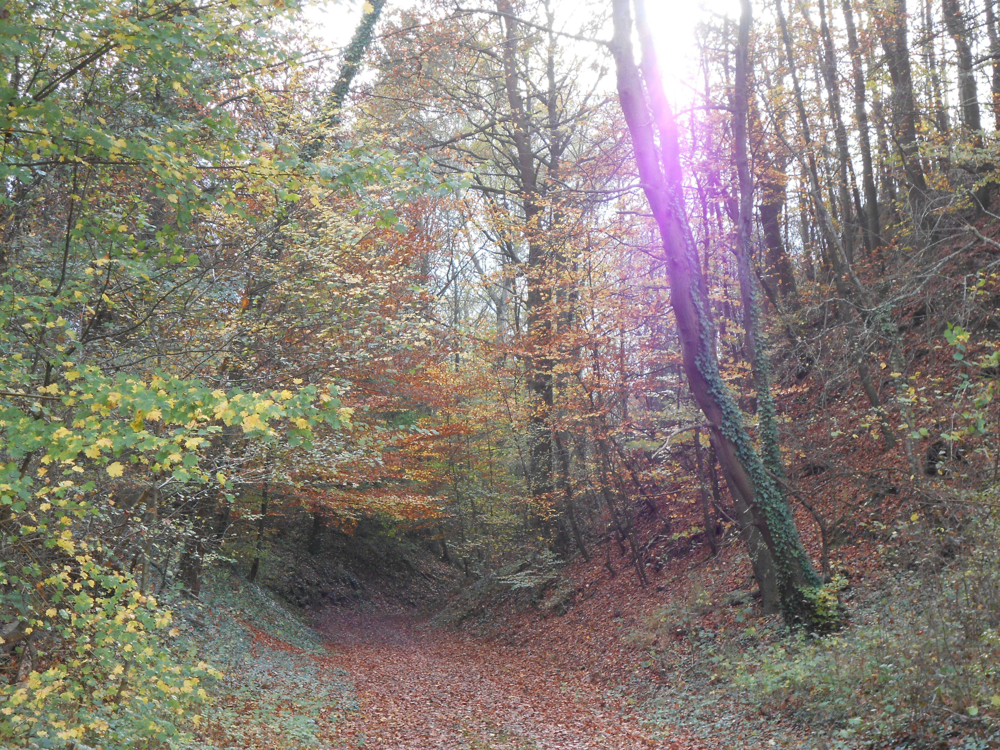

Research

|
Circumstellar Accretion DisksDisk evolution is a pivotal topic in astrophysics due to the necessity of something as simple as efficient angular momentum transport. If this transport mechanism can be described accurately, it would help explain disk lifetimes, planet formation and evolution, among other important topics. Early in the disk lifetime this would be dominated by gravitational instabilities, capable of generating strong mass accretion due to significant gas overdensities. Gravitational InstabilitiesGas overdensities often take the form of spiral arms in the disk, but under the right conditions lead to the quick formation of large gas giant planets. My job is to model the ideal mass and cooling constraints that lead to planets. To do this I use finite difference hydrodynamic simulation codes, like PENCIL and PLUTO, to model local and global effects relating to gravitational instabilities. Planet FormationThe discovery of large gas giant planets with large orbital distances, such as those around HR8799, suggests that some planets are not formed by core accretion. Gravitational instability has the potential to explain the existence of these planets while not competing with core accretion at shorter radii. For more details, click the "Research" header to the left. |
About Me
|  |
I am originally from Salt Lake City, completing my bachelor education in math and physics from the University of Utah in 2012. I continued studying physics at the Ruprecht-Karls University in Heidelberg, earning a masters degree in spring 2015. Since September 2015 I have been a doctoral student in the theory of planet and star formation group at the MPIA in Heidelberg. For a more detailed history, click here for my CV. |
Links
Scientific links:My publications (ADS link)
The PENCIL code
PLUTO code
Wengen 4 test
Other things I like:
The cartoons of Pat Bagley, Matt Davies, Mike Lukovich, Wiley Miller, and Pat Oliphant
Football tactics
Newest challenge: backcountry skiing